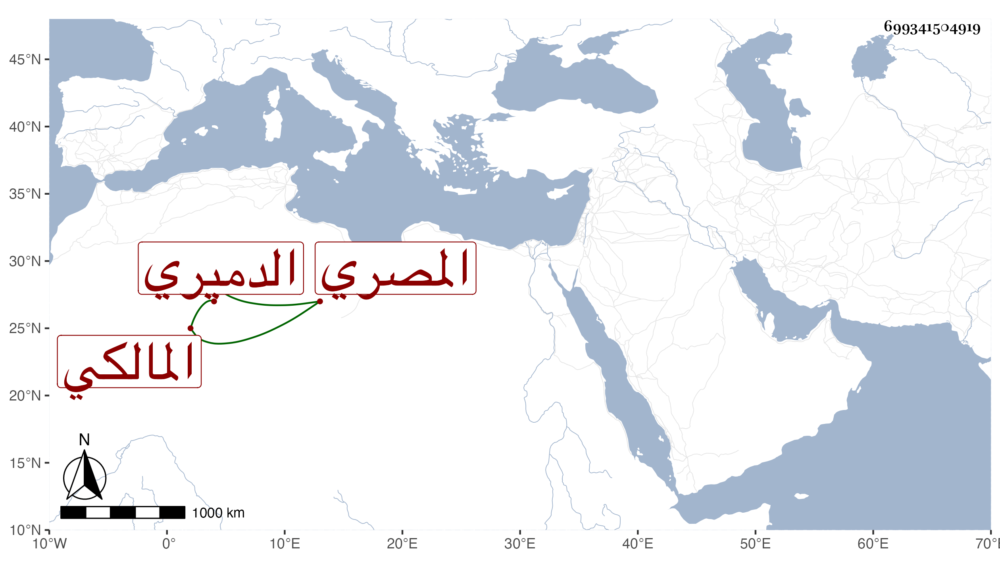

0902Sakhawi.DawLamic.ITO20230111-ara1.EIS1600.699341504919
Biography ID: 699341504919
642
عبد الغني بن أحمد بن محمد بن أحمد بن علي التقي أبو الفضل بن الشهاب الدميري الأصل المصري المالكي أخو المحيوي عبد القاد الآتي ويعرف كأبيه بابن تقي . ولد في المحرم سنة ثلاثين وثمانمائة وحفظ القرآن والرسالة والألفية وعرض على شيخنا والمحب بن نصر الله والزين عبادة والعلم البلقيني والأمين الاقصرائي والشهاب السيرجي وأجازوا له في آخرين ممن لم يجز كالبدر بن العيني وابن التنسى والقاياتي وابن الديري وباكير وطاهر والقرافي والزين الزركشي كل ذلك في سنة ثلاث وأربعين بل قرأ على شيخنا في الشفا وسمع على الزين الزركشي فيه وكذا قرأ الشاطبية بتمامها على الشهاب السكندري القلقيلي المقرىء في سنة أربع وخمسين والبخاري بتمامه على الشمس الجلالي شيخ الالجيهية وخازن المحمودية مع مراعاة شرحه للكرماني وقال إنه أفاد أكثر مما استفاد وسمع في النسائي الكبير على السيد النسابة وأبي نافع الأزهري والشمس التنكزي وغيرهم وقرأ ايضا على التقي الشمني وحضر دروسه ودروس الشرواني وأخذ في الفقه والعربية عن السنهوري ومن قبله عن أبي القسم النويري والزين طاهر بقراءته وقراءة غيره وعن التقي الحصني في المعاني والبيان والعربية والمنطق وغيرها في آخرين وناب في الحكم عن الولوي السنباطي في آخر عمره فمن بعده ، ودرس بالحجازية وكذا قرأ الميعاد بالالجيهية بل وقرأ عند ابن حريز في رمضان عدة كتب وأفتى ، وحج وسافر لبعض القرى ، وهو عاقل متودد تكلف هو وجماعة شهود مجلسه بجامع الفكاهين في حكم نسب إليه ثم استقل بالقضاء بعد أخيه في أواخر صفر ولبس التشريف في أوائل ربيع الأول سنة ست وتسعين وكذا استقر بعده بالشيخونية ويقال إن الخطيب الوزيري اشترك معه فيه .
